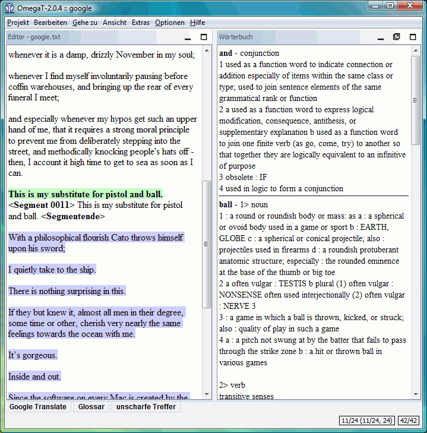

Словари
Как загрузить и установить словари?
OmegaT может использовать словари, благодаря встроенной поддержке платформы StartDict. Чтобы установить словари нужно сделать следующее:
- Найдите словарь для необходимой пары языков — к примеру на сайте StarDict, указанном выше, или на FreeDict
- Загрузите файл - он будет представлять собой архив tar.bz.
- С помощью команды untar (или аналогичной (к примеру, winrar в Windows) извлеките содержимое архива в папку «Dictionary» текущего проекта. В архиве обычно содержатся 3 файла с расширениями dict.dz, idx и ifo.
Кроме двуязычных словарей с помощью области словаря можно также просматривать, и одноязычные словари, как к примеру:
- Webster's Revised Unabridged
Dictionary (1913)
- Longman Dictionary of
Contemporary English
- 10-е издание словаря Merrian Webster
- Краткая Энциклопедия Британника
- ...и другие.
Некоторые словари являются «свободными к использованию», некоторые, в том числе и названные выше, выпущены под лицензией GPL. На примере внизу можно увидеть использование словаря Merrian Webster:

Проблемы, возникающие со словарями
Если область словаря пустует, проверьте следующее:
- Лежат ли словари в папке, указанной в настройках проекта? Это можно проверить в окне свойств проекта (в меню выберите Проект → Свойства или нажмите
Ctrl+E)
- В папке содержатся три файла с одинаковым именем и расширениями dict.dz, idx и ifo? Если там всего один файл с нужным именем, проверьте расширение. Если это архив tar.bz, его нужно распаковать.